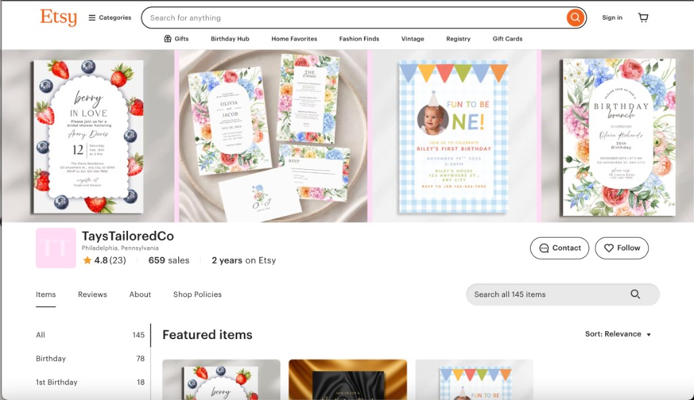
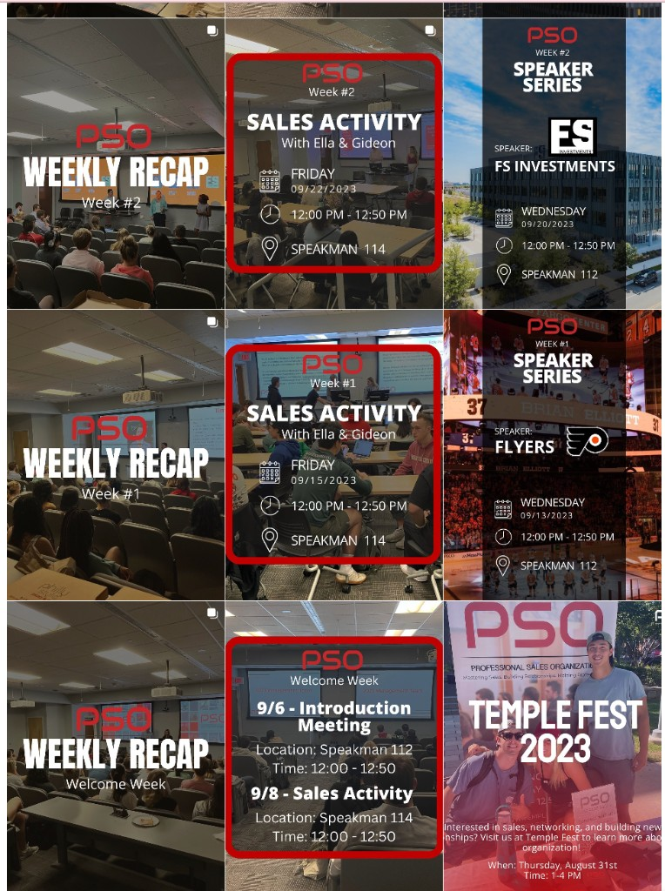
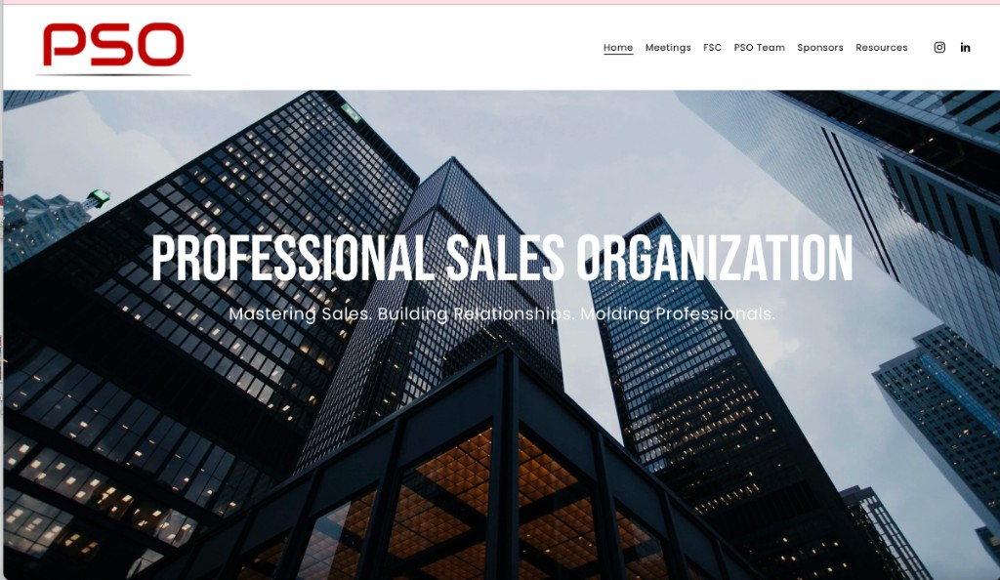

Marketing Portfolio
Creative marketer with a data-driven mindset.
I create campaigns that are visually strong and strategy-first. My work combines content, analytics, and growth testing to drive measurable outcomes.
Selected Work
Project highlights with measurable outcomes

Etsy SEO + Listing Optimization
I launched and run this shop, creating all digital designs while optimizing listings for discovery and conversion.
View case study 700 sales in first 6 months
PSO Instagram Content Management
I managed PSO Instagram content strategy and posting cadence, producing weekly recap and event campaign assets.
View case study Archive from my management period
PSO Website Redesign (Squarespace)
Redesigned the PSO website to improve layout clarity and make member-facing information easier to navigate.
View case study Improved UX across key pagesEtsy Case Study — TaysTailoredCo
I started TaysTailoredCo from scratch and create all of the digital designs myself, then grow the shop with SEO, market research, and analytics-led decisions.
What I do
- Create all digital product designs for Etsy listings and shop branding.
- Keyword research for listing titles, tags, and customer search intent.
- Listing optimization for thumbnails, copy clarity, and conversion flow.
- Competitor and trend scans to identify high-demand product opportunities.
- Performance tracking with iteration based on visits, clicks, and engagement.
Outcome
From launching my first listing, I built this shop over 6 months to 700 sales. By continuously testing design, metadata, visuals, and listing structure, I improved discoverability and built a repeatable growth workflow.
Temple University PSO Marketing
I led marketing for Temple University's Professional Sales Organization by running Instagram content and refreshing communication visuals. I posted multiple times each week and maintained consistent branding across event promotions and weekly recaps.
Instagram Leadership
- Published multiple posts per week to support attendance and awareness.
- Created reusable templates for speaker events, weekly recaps, and announcements.
- Aligned visuals and copy with a consistent PSO brand style.
Note: these examples are from the period when I managed the account. I do not link the live Instagram because content ownership has changed since my role ended.
Website Redesign Highlight
I also redesigned the PSO website to improve layout clarity and make student-facing information easier to navigate.
Platform: Squarespace. This screenshot is from the version I designed during my role period.

Experience
Director of Operations — Professional Sales Organization
- Calculated scores for an 80-person sales competition, ensuring accuracy in Excel.
- Tracked attendance and led a rewards system that increased engagement and retention by 50%.
Director of Marketing — Professional Sales Organization
- Optimized and developed a new organization website, improving layout clarity and user experience across pages.
- Designed cross-platform content 4x per week (150+ posts annually) to promote events and boost engagement.
Marketing Intern — Fox Marketing Department
- Created engaging social media content to boost engagement and student recruitment efforts.
- Implemented marketing strategies to increase engagement and support departmental growth.
- Executed a multi-week content calendar to maintain consistent, on-time social media posting.
Social Media Marketing Intern — Spencer's Plate
- Created content across multiple social platforms, producing 12+ pieces of content weekly.
- Produced 4+ graphics and short-form video assets weekly, maintaining brand consistency.
- Collaborated with team to plan, pitch, and schedule content aligned with brand strategy.
Skills
SEOMarket ResearchData AnalyticsAdvertising
Social StrategyCanvaCapCutExcelAdobe Creative Suite
SquarespaceWordPress
Client Feedback
Etsy Testimonials
★★★★★
“Taylor went above and beyond when I reached out about a milestones poster to match the birthday invite I purchased. She responded quickly, followed my requests perfectly, and was genuinely so kind. The entire interaction was wonderful, and I’m so grateful for her help. I absolutely can’t wait to use her products for my son’s first birthday!”
★★★★★
“I received so many compliments on this invite. Also it was extremely easy to edit.”
Reviews sourced from my Etsy shop (public customer feedback).